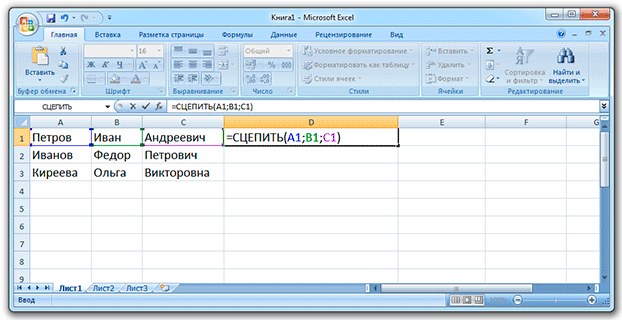
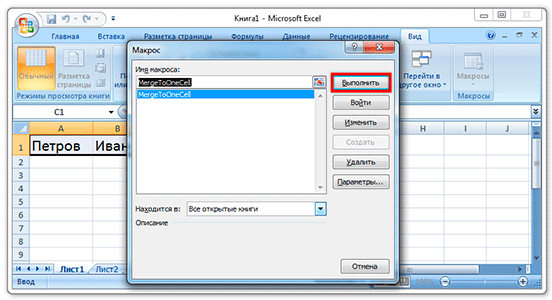

Объединение ячеек в Microsoft Excel
В этом уроке я покажу, как объединить ячейки в Экселе. Первые два способа подойдут в случае, если нужно склеить пустые или почти пустые ячейки (частично заполненные). Другие же соединят не только сами ячейки, но и их содержимое.
Самый простой способ
1. Выделяем то, что нужно объединить.
2. Нажимаем на кнопку во вкладке «Главная» в верхней панели.
По умолчанию эта кнопка соединяет всё выделенное и помещает содержимое в центре. Но есть и другие варианты – для их просмотра нажмите на маленькую стрелку справа от кнопки.
Еще один простой способ
1. Выделяем нужные ячейки и щелкаем по одной из них правой кнопкой мышки. Появляется контекстное меню, в котором выбираем пункт «Формат ячеек».
2. В окошке переходим на вкладку «Выравнивание» и ставим галочку напротив пункта «Объединение ячеек», после чего нажимаем OK.
Объединение ячеек с данными
Если вы собираетесь соединить несколько ячеек, в которых уже есть информация, то в результате будут сохранены не все данные. Часть информации удалится.
Чтобы этого не произошло, склеивать их нужно по-другому. Есть несколько способов: через сцепление данных, при помощи программы Блокнот и через макрос.
Первый способ (сцепление) я бы рекомендовал начинающим пользователям, второй (Блокнот) – любителям необычных решений, а третий (макрос) – тем, кто знает, что такое Visual Basic.
Способ первый (через сцепление)
Шаг 1: склеиваем данные
Сначала нужно склеить данные, то есть соединить их друг с другом. Делается это в новой ячейке через функцию «Сцепить» или через знак &. Покажу на примере оба варианта, а вы уж выбирайте, какой больше нравится.
Склеивание через функцию «СЦЕПИТЬ». Допустим, у нас есть отдельно имя, фамилия и отчество. Все эти данные нужно объединить, а для этого сначала склеить их.
1. Щелкаем по пустой ячейке.
2. Печатаем знак = и большими буквами слово СЦЕПИТЬ
3. Открываем скобку и щелкаем по первой ячейке с данными, затем печатаем точку с запятой и щелкаем по второй, затем опять точку с запятой – и по третьей. После это закрываем скобку.
4. Нажимаем клавишу Enter на клавиатуре.
Все данные слепятся в одну сплошную строку. Если же их нужно каким-то образом разделить (пробелом, запятой и т.д.), этот символ также нужно добавить в формулу, но только в кавычках. Пример знака – в качестве разделителя:
То же самое и с пробелом: его нужно будет напечатать в кавычках, а их разделить точкой с запятой:
Склеивание через знак &. Находится этот символ там же, где цифра 7 на клавиатуре. Набирать его нужно на английской раскладке при зажатой клавише Shift.
Принцип почти такой же, как и при склеивании через функцию СЦЕПИТЬ:
1. Щелкаем в пустой ячейке и печатаем в ней знак =
2. Нажимаем на первую ячейку с данными, печатаем символ & и нажимаем на вторую ячейку, затем опять вводим & и нажимаем на третью и так далее.
Как и в предыдущем случае, любой дополнительный символ (разделитель) должен быть указан в кавычках.
Шаг 2: убираем дубли
Не важно, каким способом, но данные мы склеили.
Если нужно получить такой же результат и для остальных ячеек, эту «формулу» можно растянуть:
- Щелкаем по ячейке с результатом
- Наводим на маленький черный квадратик внизу справа
- Когда курсор примет вид тонкого черного плюса, нажимаем левую кнопку мышки и, не отпуская ее, растягиваем по другим ячейкам
У меня получилось вот что:
Подробнее о «растягивании» можно узнать из вот этого урока.
Всё это, кончено, хорошо и замечательно, но есть одна проблемка. Так как данные мы склеили через формулу, то результат этих действий будет виден только если сохранится оригинал. Другими словами, и новые и старые ячейки должны остаться на месте.
Иногда это подходит, но что делать, если нужны только склеенные данные? Выход есть!
1. Выделяем новые (склеенные) ячейки.
2. Щелкаем по любой из них правой кнопкой мышки и из меню выбираем «Копировать».
3. Выделяем какие-нибудь другие пустые ячейки.
4. Нажимаем по любой из них правой кнопкой мышки и выбираем «Специальная вставка».

5. В окошке выбираем пункт «Значения» (вверху) и нажимаем ОК.
В итоге получаем те же самые склеенные данные, но уже не в виде формулы (которая без оригинала не работает), а как обычный текст.
Собственно, теперь все предыдущие данные можно удалить, а эти (новые) скопировать и вставить на их место.
Способ второй (через Блокнот)
Честно говоря, мне этот способ даже больше нравится – он быстрее.
1. Выделяем в Экселе ячейки с нужными данными (можно выделить целые столбы/строки).
2. Копируем их (правая кнопка мыши – Копировать).
3. Открываем программу Блокнот: Пуск – Все программы – Стандартные - Блокнот. Или открываем Пуск и печатаем слово блокнот в поле для поиска (внизу).
4. Вставляем в окно программы скопированные данные (правой кнопкой мышки по пустому месту – Вставить).
5. Копируем символ табуляции.
Для этого в пустой строчке Блокнота (перейти на нее можно, нажав на Enter) нажимаем один раз клавишу Tab на клавиатуре.
Указатель сразу перемещается чуть правее. Зажимаем левую кнопку мышки и выделяем этот отрезок, который визуально похож на десяток пробелов. Затем копируем (правой кнопкой по выделенному – Копировать).
6. Вверху программы Блокнот нажимаем на пункт «Правка» и выбираем «Заменить…».
7. В первое поле («Что:») вставляем скопированный символ табуляции, а во второе поле («Чем:») вставляем необходимый нам разделитель, например, жмем клавишу пробел.
8. Нажимаем на кнопку «Заменить все» и закрываем это маленькое окошко.
После этого данные в Блокноте немного изменятся – текст как будто бы чуть-чуть сожмется.
9. Выделяем все это в Блокноте и копируем.
10. Переходим в программу Excel и вставляем скопированные данные (удалив предыдущие).
Способ третий (макрос)
Еще один вариант объединения ячеек в Экселе без потери данных. Он чуть более сложный - для тех, кто знает, что такое Visual Basic.
Данный способ я позаимствовал из вот этой статьи . Кстати, очень клёвый сайт, советую всем, кто работает с программой Excel.
1. Открываем вкладку «Вид» и нажимаем на кнопку «Макросы».
2. Печатаем название для макроса, нажимаем «Создать».
3. Откроется редактор Visual Basic. Вставляем туда следующий код:
Sub MergeToOneCell()
Const sDELIM As String = " " 'разделитель в данном случае пробел.
Dim rCell As Range
Dim sMergeStr As String
If TypeName(Selection) <> "Range" Then Exit Sub 'если выделяются не ячейки, тогда программа выходит
With Selection
For Each rCell In .Cells
sMergeStr =sMergeStr & sDELIM & rCell.Text 'процесс сбора текста из ячеек
Next rCell
Application.DisplayAlerts = False 'выключаем обычное предупреждение о потере текста
.Merge Across:=False 'объединение ячеек
Application.DisplayAlerts = True
.Item(1).Value = Mid(sMergeStr, 1 + Len(sDELIM)) ' добавляем к объединенным ячейкам суммированный текст
End With
End Sub
4. Закрываем редактор Visual Basic.
Теперь, чтобы объединить ячейки с данными, нужно их выделить, после чего на вкладке «Вид» нажать кнопку «Макросы» и в новом окошке на «Выполнить».
Правда, такой файл нужно будет сохранить в специальном формате с поддержкой макросов: Файл – Сохранить как – в поле «Тип файла» выбрать «Книга Excel с поддержкой макросов».